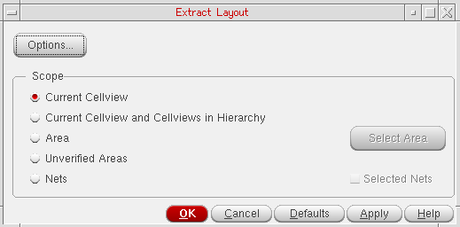

Extracting a Top-Level Design
When extracting a top-level design, Layout XL extracts
- Top-level objects—shapes, vias, and pin figures.
- Pin figures of top-level instantiated masters. These pin figures represent the interface between the top level instances and the lower level instances in the design and are, therefore, considered to be at the top level. The connectivity of these pin figures in the context of top level extraction is represented by the nets attached to the instance terminals corresponding to these pin figures.
To extract the current top-level design:
-
From the CIW, open a layout cellview and choose Connectivity – Update – Extract Layout.
The Extract Layout Form form is displayed.
 -
Make sure the Scope is set to Current Cellview and click OK or Apply.
The current cellview is extracted.
Related Topics
Return to top